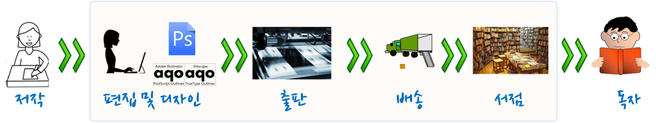

데이터 과학을 위한 저작도구
글을 쓰는 것은 소프트웨어 개발이다!
들어가며
요즘은 빨라져서 초등학교 들어가기 전부터 글을 쓴다. 연필과 공책을 가지고 자음과 모음을 하나씩 익히고 나서 자음과 모음을 결합해서 받침이 없는 한글을 배우고 점점 난이도가 높은 한글을 배워가면서 글자의 음과 뜻을 익힌다. 글자를 이어서 문장을 만들고, 문장을 엮어서 문단을 만들고, 생각의 단위를 장, 절, 항으로 넓혀나가고, 이를 유기적인 체계로 가지고 논문이나 책의 형태로 만든다.
200자 원고지
200자 원고지 4장은 통상 A4 용지 한장에 해당한다. 만약 A4 용지 10장 보고서나 논문을 작성한다고 하면, 종이 200자 원고지 40장에 연필이나 볼펜을 가지고 작성하게 된다. 최종본을 얻기까지 빨간색으로 선생님이나 주변의 첨삭지도를 받아 최종본을 만들기까지 여러번의 반복과정을 거치게 된다.
최종 원고가 200자 원고지 40장에 담겨 탈고를 마치게 되면, 독자에게 다가갈 준비를 한다. 그림을 넣거나 아름다운 글씨체를 적용해 보고 종이 재질을 바꿔보기도 하고 영혼이 담긴 원고를 독자가 보기 좋고, 이해하기 쉽고, 때로는 감동과 재미를 줄 수 있도록 출판 단계에서 많은 사람들의 노력이 들어간다.
탈고를 마친 원고에 글씨체를 비롯한 디자인 작업이 완료되면 출판장비를 갖춘 출판소에서 인쇄장비를 거쳐 종이책 혹은 보고서가 완성되고, 이렇게 대량으로 출력되면 각 서점으로 배송되어 독자가 서점에서 구독을 하게 된다.
저자의 생각을 글로 표현하면 현재도 대부분 편집 및 디자인, 출판, 배송, 서점 등 각 단계에 사람이 관여하고 필요에 따라서는 컴퓨터가 작업을 지원하는데 사용되어 최종 독자에게 전달된다.

컴퓨팅 사고력(Computational Thinking)
책과 보고서 제작하는 과정은 워드 프로세스를 기본으로 두고, 숫자 계산이 필요하면 엑셀, 이미지가 필요하면 그래픽 전문 소프트웨어, 정보 검색도 웹브라우져를 사용한다. 글자, 단어, 문장, 문단, 장/절/항으로 생각의 단위를 서문, 본문, 결어 및 참고문헌, 주석, 그림, 그래프, 도표 등도 함께 체계적으로 작성해 나간다.
다양한 소프트웨어를 통해서 원고를 탈고하게 되면 서식, 문장 문단 모양, 색인, 참조문헌 등 보기 좋고 가독성 높은 형태로 외양을 입히는 과정을 거치게 되는데 이 과정도 소프트웨어가 핵심적인 역할을 하게 된다. 책과 보고서에 대한 디자인 작업이 완료되면 다양한 형태로 배포하기 위한 프로그래밍 과정을 거쳐 PDF, 전자책(ePUB), 웹(HTML), 출판책 형태로 독자에게 전달된다.
글을 써서 이를 독자에게 전달되는 과정은 과거에 전문작가, 디자인 전문가, 출판전문가, 서점운영자 등 수많은 전문가가 연관되어 있고 타자기, 디자인 기계, 인쇄기 등 수많은 기계가 필요했으며 이를 사업적으로 기술적으로 연결할 수 있는 다양한 통신 방법이 필요했다. 비전문가가 밖에서 보면 복잡하고 어려워 보이지만, 컴퓨팅 사고의 시각으로 보면 단순할 수 있다.
글을 쓸 때 컴퓨터를 이용해서 문제를 해결하는데 적용할 수 있다. 컴퓨팅 사고력의 핵심은 추상화(Abstraction)와 자동화(Automation)다. 즉, 추상화과정을 통해 보고서나 책 원고를 작성하고 나면, 디지털화된 자동화된 후속 과정을 거쳐 독자에게 전달하는 것이다. 여기서 컴퓨터에 대한 이해가 필수적이고 서로 다른 책제작 과정에 프로그램이 들어가지 않는 곳이 거의 없다. 과거에는 컴퓨터 프로그램 작성 전문가만이 코딩을 할 수 있었다면, 현재는 누구나 코딩이 가능한 세상이 되었다.
글쓰기는 코딩이다.
컴퓨팅 사고력 기반으로 글쓰기 문제 해결을 실천하는 것이 코딩이다. 워드프로세서나 엑셀 등 특정 목적에 최적화된 소프트웨어 도구를 사용해서 특정 목적을 달성하는 것도 좋은 접근법이다. 하지만, 사람이 잘못하는 정확성, 반복성, 성실성이 요구되는 곳에 컴퓨터를 사용하는 것이 주어진 소중한 시간 내에서 더 많은 시간을 글쓰기 자체에 집중할 수 있게 한다.
이를 위해서 마크다운이나 LaTeX을 사용해서 수식, 표, 디자인 작업에 사용해서 통해 글을 저작할 경우 재사용성을 높여 더 많은 시간을 글쓰기에 사용할 수 있게 한다. 마크다운이나 LaTeX으로 저작을 하면 출판, PDF, 전자책(ePub), 웹(HTML) 배포는 다른 소프트웨어를 한번만 설치하면 그 다음부터 명령어 하나로 해결할 수 있다. 즉, 추상화를 통해 품질 높은 글을 마크다운 혹은 LaTeX 코딩 개발과정을 통해서 작성하면 자동화 과정을 컴퓨터를 사용하여 사람이 개입된 것보다 더 정확히 반복해서 성실히 작업을 완료하게 된다. 이 과정에서 거의 비용이 들지 않는 것도 눈여겨 볼 점이다.
초기 단계부터 추상적 사고를 기반으로 컴퓨터를 사용하여 저작을 시작하고 다양한 소프트웨어를 사용하여 거의 중간에 사람의 개입이 필요하지 않는 자동화된 과정을 거쳐 독자에게 전달된다.

소프트웨어 교재 제작 사례
엑스더블유무크(xwMOOC)에서 R 팩키지와 정보교육을 위한 파이썬을 마크다운과 LaTeX을 통해 데이터 과학의 핵심 소프트웨어 교육 콘텐츠를 아마존과 O’Reilly 출판사에서 판권을 받아 무료로 공개하는 작업을 추진했다. 마크다운과 LaTeX으로 한글화 작업을 거쳐 원고를 탈고하고 나면 정확하고 성실하며 24시간 일을 하는 컴퓨터에 맡겨서 출판 인쇄물, PDF, 전자책(ePub), 웹(HTML) 산출물을 얻었다. 이 과정에 번역자의 시간을 제외하면 거의 비용이 들지 않았다. 하지만, 가장 최근에 출시된 높은 품질의 데이터 과학을 교재를 찾고자 하는 내국인에게는 도움이 될 것이다. 또한, 모든 원고는 GitHub에 공개되어 있으니 공개 소프트웨어 기여를 통해서 더 많은 사람과 함께 하는 것도 추천한다.
마무리
사실 글쓰기 뿐만 아니라 다른 모든 분야가 Computation-X 라는 이름으로 융합되고 진화하고 있다. 예를 들면, 컴퓨터 생명공학(Computational Biology), 계산 통계학(Computational Statistics), 계산 물리학(Computational Physics), 컴퓨터 화학(Computational Chemistry) 등 수많은 사례를 들 수 있다. 2010년 쟈넷 윙 교수의 조사에 따르면 거의 모든 학문 분야가 컴퓨터와 연관이 되고 있으며 컴퓨터를 적극 활용하여 과학기술, 인문, 사회, 법과 제도 등에서 광범위한 융합이 나타날 것으로 내다봤다.
추상화와 자동화를 근간으로 하는 컴퓨팅 사고력이 글쓰기에 적용될 때 갖게 되는 함의를 짧게 나마 전체 제작과정을 살펴봤고, 더불어 엑스더블유무크(xwMOOC) 사례를 통해 컴퓨터를 적극 활용하여 거의 비용을 들이지 않고 과거에는 상상할 수 없는 작업을 쉽고 빠르고, 정확하게 수행할 수 있는 것을 확인했다.